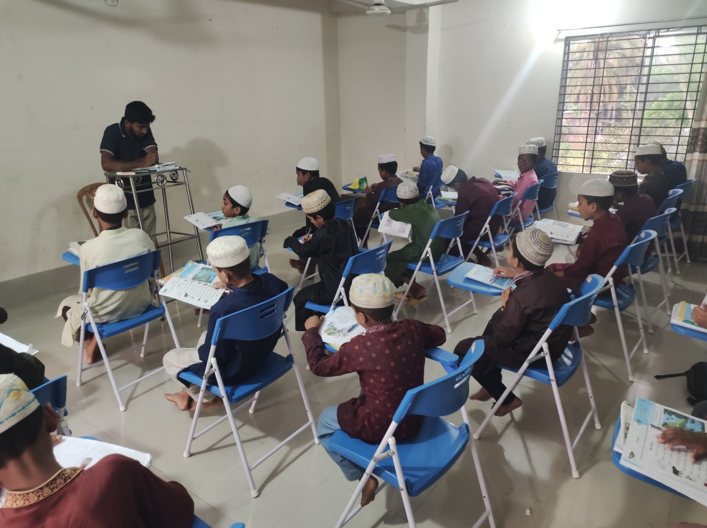
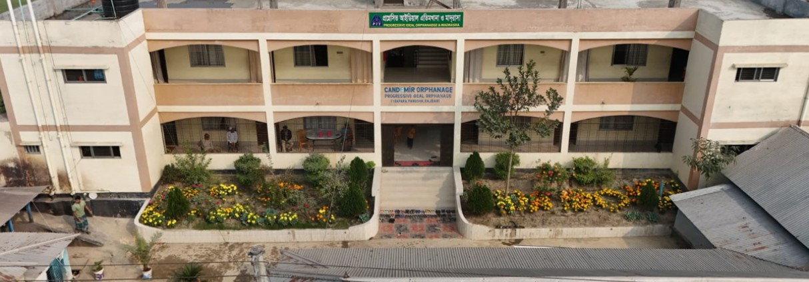
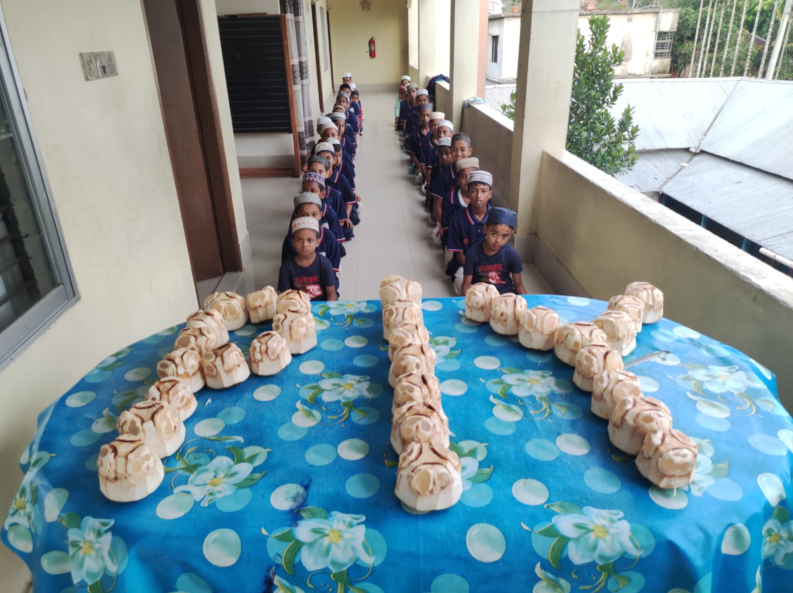
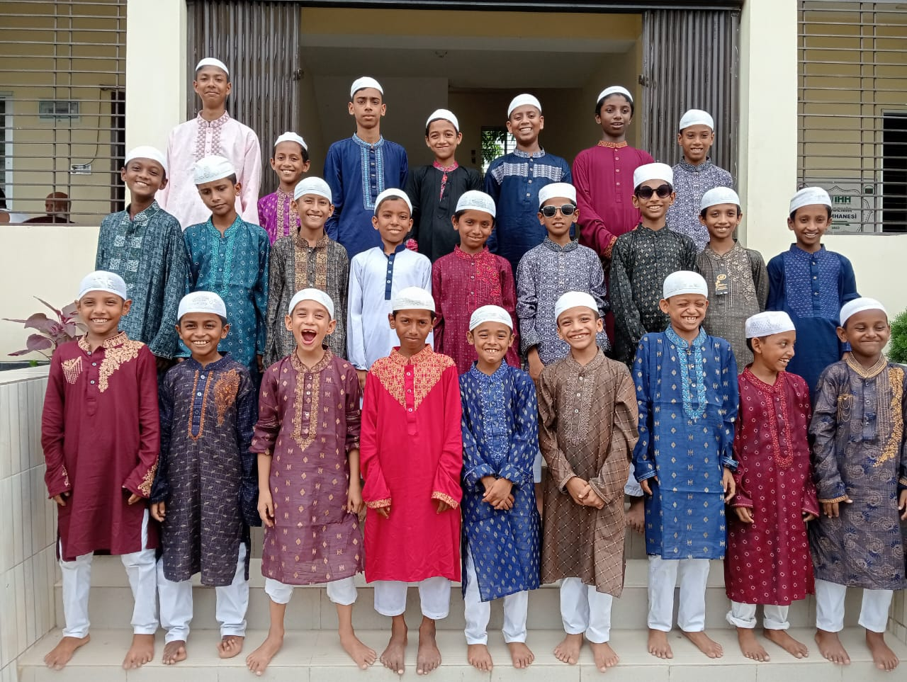

How We Help Children Thrive
Education, residential care and shared activities support students at Progressive Ideal Yatimkhana.
Education & Learning
The January–June 2026 report lists students from nursery through higher-secondary levels, as well as a student pursuing nursing studies. Teaching, tutoring and study arrangements support their learning. The report also notes a proposed Dakhil madrasa.
- Support for school and higher-secondary studies
- Tutoring and coaching
- Hifz and Islamic learning
- Support for continuing education
- Library resources and digital equipment identified as development needs


Residential Care & Healthcare
Residential care includes accommodation, clothing and healthcare support. The January–June 2026 report records 48 resident students and 48 beds.
- Accommodation for resident students
- 48 beds reported in January–June 2026
- Clothing support
- Healthcare expenses supported
- Daily residential care
Nutrition & Meals
Food and meals are part of the orphanage’s residential support. The campus includes a kitchen and dining space, supported by cooking staff.
- Meals for resident students
- On-site kitchen
- Dining space
- Cook and assistant cook listed in the 2026 report
- Ramadan and Eid activities documented in the source material


Activities & Community Life
The reports and brochure document sports, cultural and religious programs, educational visits, national-day observances, and seasonal distributions.
- Sports activities
- Religious programs and observances
- National-day discussions and prayers
- Cultural events and celebrations
- Educational visits and excursions